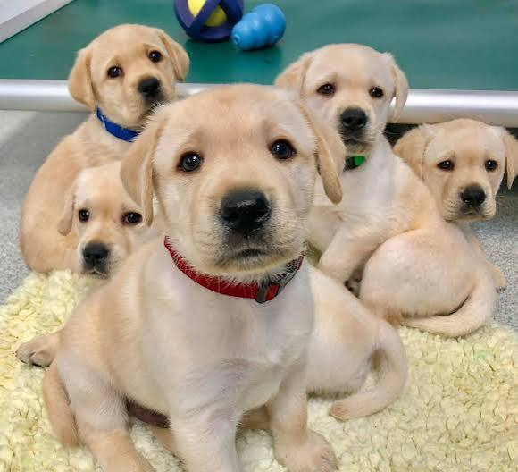
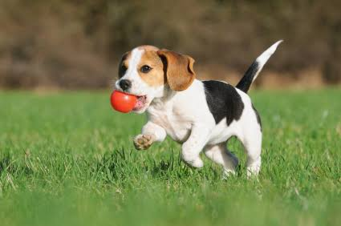
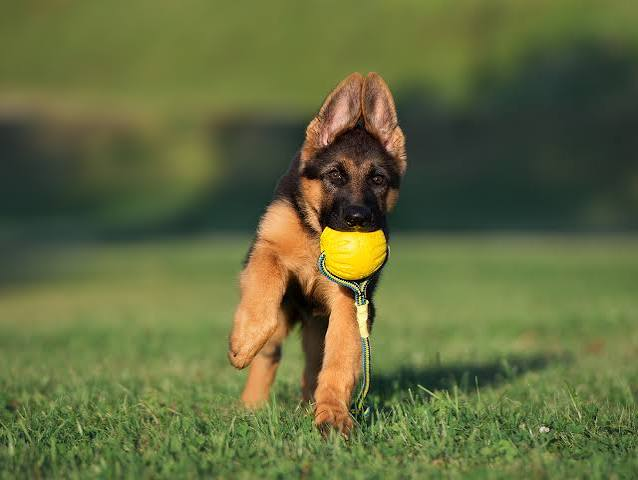

A collection of open-source libraries and research implementations.
Short description of the autonomy algorithm or robotics library you built.
C++ROS2Another placeholder for your work at JHU APL or personal research.
PythonPyTorch

